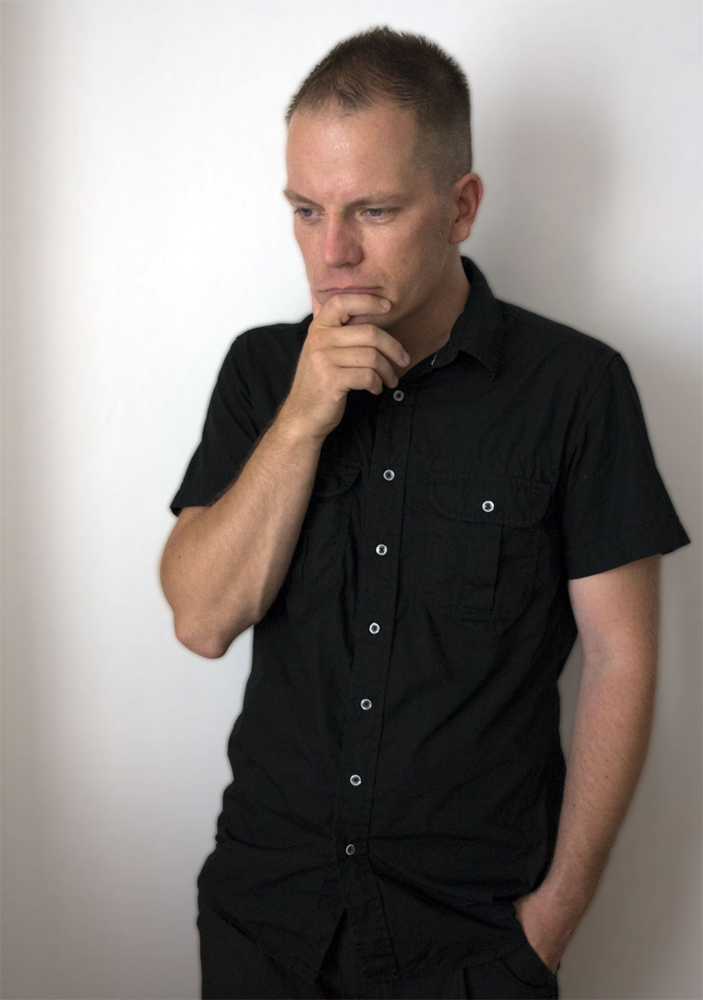

Product design
UX, usability and User-Centered Design are my specialisations and passion and I’m a product and service designer versed in
user research, workshop facilitation, co-design, interaction design, requirements engineering, usability evaluations,
competitive analyses and of course usability testing. I follow Agile and Lean UX principles in my work.
Product management
Product owner and designer roles are a perfect match in digital product development
and I’ve been in this dual role for almost 8 years. I shine when creating product visions,
roadmaps, user story maps, do backlog management and have experience acceptance testing and product customer support.
I can set up product management as a function and develop the related processes, practices and competencies.
Agile coaching
I believe in Agile Software Development and have an interest in different methodologies, processes and the continuous improvement of teamwork.
Coaching Agile development practices and team cooperation, retrospectives etc. are often one of my focus areas when
working on the actual product and solution design.
Web design
I’ve done web design and sites for a long time in the past. Building web sites from scratch with HTML, CSS, JS, jQuery, Bootstrap, PHP etc.
and with different content management systems like Sharepoint and Wordpress.
Search engine optimization (SEO), accessibility, performance optimisation and web analytics.
I don’t see myself as a developer but can work my way through this domain.
Who is Pirkka Rannikko?

I’m a versatile professional skilled in UX and service design, product and project management, Agile coaching, and workshop facilitation.
I excel at creating intuitive user experiences, managing complex projects, guiding teams in Agile methodologies,
and empowering teams and individuals through coaching and workshops. My wide expertise contributes to successful outcomes and drives innovation in projects and teams.
I have a BE in Media Technology and MSc in Interactive Technology and some basic studies in statistics, service design and futures design.
I wrote my master’s thesis about Agile User-Centered Design or how to integrate Agile and UCD in 2011.
I live in Tampere, Finland with my better half and our kid.
I often spend my spare time by reading professional literature, in various outdoor activities and don’t shy away from an occasional board or role playing game session.
See my LinkedIn profile and
thoughts about being a product owner for more details about my professional background.
So do you need someone who's passionate about agile user experience?
Drop a line to mail@pirkkarannikko.com if you do!